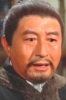

Also known as:Kung Fu Massacre
Country:United States, 92 minutes
Spoken languages:
Genres:
Director(s):Wong Tin-lam
Writer(s):
Video Codec:Unknown
Number: 242


Certification:
Storyline:
After his father's brutal murder, Ton Tin-Kuo sets out to seek the killer. He is befriended by evil casino owner Don Yee, who actually sets Tong up to fight his bitter enemy Pau Tze-Pin, but Pau reveals the truth of Don Yee's tricks to Tong and later makes firm their alliance by rescuing him from prison and explaining that Don Yee is his father's murderer. When his sister is also killed by Don Yee, Tong thirsts for revenge!
Cast: 

Medium: Original DVD,
Comments: Part of: The Martial Arts Essentails Volume 1 - The Films of Yuen Wo Ping
Loaned: No
Aspect ratio: Unknown